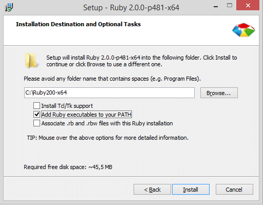
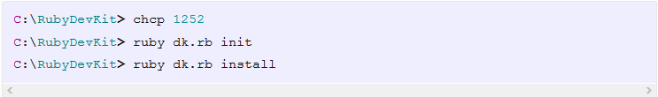
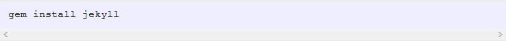

آموزش جکیل قسمت1

در ابتدا باید جکیل را بروی سیستم خود نصب کنید.برای این کار باید ابتدا ruby رانصب کنید.

باید حواستان باشد که حتما تیک دومی را بزنید.
بعد از نصب Ruby نوبت به نصب Ruby DevKit میرسه که از همون آدرس قبلی قابل دسترسی هست. برای نصب ابتدا محتویات فایل
zip رو درون یک پوشه (ترجیحا در root یکی از درایورها) که اسمش بدون فاصله و حروف خاص باشه قرار می دیم. بطور مثال
C:\RubyDevKit مکان مناسبی برای نصب Ruby DevKit است. پس از قرار دادن فایلها نوبت به اجرای اونها میرسه. کدهای زیر رو
برای نصب DevKit توی command prompt ویندوز وارد می کنیم. دقت کنید که باید توی مسیر همین پوشه ایجاد شده باشیم تا
بتونیم محتویاتش رو نصب کنیم.

بعد از اینکه نصب ruby و ruby DevKit تموم شد نوبت به نصب jekyll میرسه. برای نصب jekyll کدهای زیر رو توی command prompt ویندوز وارد کنید.
